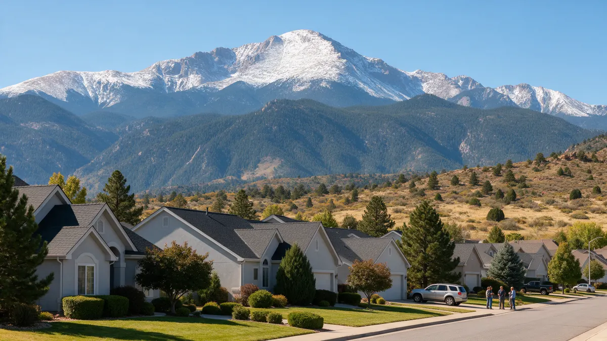

Colorado Springs Plumber Handbook

A Colorado Springs plumber can do a lot more for you if you arrive at the call prepared. This handbook is built around the choices homeowners make during a leak, from the first shutoff to deciding on a repair. Plumbing Pros Colorado is a referral line that connects you with independent local plumbers. We also cover how Pikes Peak country shapes pipes, pressure and winter risk.
Do these things first
Turn off the main shutoff valve, then open a faucet at the lowest level of the house to bleed pressure. If the leak is near the water heater, turn the heater's power or gas control to its off or pilot position as its label directs.
Move rugs and electronics, lift furniture legs onto blocks, and soak up what you can. Photograph the source and the damage before cleanup so your own record is complete.
- Close the main
- Bleed pressure at a low faucet
- Turn off the water heater if it is involved
- Protect belongings
- Photograph everything
Signs that something is wrong behind the walls
Look for discoloration on ceilings, paint that blisters, warped baseboards, a damp odor in a closet, or a meter that moves when no one is home. Houses in Old Colorado City and the Ivywild area include older construction where pipe behind plaster has had decades to wear.
Newer homes in Rockrimmon and the northern part of the city rely on PEX and plastic drains. Their failures tend to be at connections, so check the area under sinks and around the water heater and washing machine.
Ask neighbors or your HOA whether others have had similar trouble, since problems sometimes cluster by subdivision and builder. That information can help the plumber focus on likely weak points, such as a specific fitting used throughout a neighborhood.
How the diagnosis tends to go
A plumber normally starts with the meter on your property, which belongs to Colorado Springs Utilities, and checks whether it moves with everything off. Then comes a pressure reading. Hilly parts of the city, such as the slopes along Cheyenne Mountain, can have pressure that differs a good deal from the flatter east side.
If the leak is hidden, expect listening equipment, a thermal camera, or sectional pressure tests. Sewer concerns lead to a camera run and sometimes a cleaning with a drain machine.
Properties on the west side near Manitou Springs and the base of Pikes Peak can see more extreme weather and steeper lots. Hillside lots affect sewer slope and pressure, so describe your lot when you call.
Ask the plumber these questions
What exactly failed, and is it isolated? What pipe material is in the wall, and will the repair match it? Will opening the wall be needed, and how will it be closed up? Does the repair require a permit through the local building authority?
Also ask what warning signs to watch afterward, so you can tell the plumber quickly if the problem returns. The arrangement for work is between you and the independent plumber.
The plumber may suggest testing water pressure over several hours or on different days. Pressure can swing with neighborhood demand, and a reading at a single moment may miss the problem.
Repair or replace: the deciding factors
The age of the pipe, how often it has leaked, and how reachable it is decide the question. A single leak in a copper line near a fitting usually calls for a local repair. Many pinholes in a stretch of copper or a corroded galvanized run suggest replacing that stretch.
Water heaters work the same way: a leak from a fitting can be fixed, while a leak from the tank body means the tank has reached the end of its life. Your plumber can explain which one you have.
Houses near Black Forest and the northern edges may rely on private wells or septic systems. If yours does, say so up front, because the diagnosis differs from city service.
Protecting your home at elevation
Colorado Springs sits at about 6,000 feet, and the Pikes Peak region sees sudden cold snaps that can drop well below 32°F. Insulate pipes along garage walls, keep garage doors closed, and let faucets drip on the coldest nights.
If you leave town in winter, set the thermostat to keep the house warm and know the shutoff location. Neighbors and house sitters should too. Periodically check around the base of toilets and under sinks for early dampness.
Keep a short folder with your shutoff location, water heater age and any past repair notes. When a leak happens at night or on a weekend, that folder lets a family member or house sitter act correctly without guessing.
Frequently asked questions
Can I turn the water back on after a small leak?
If the leak is at a fixture with its own shutoff, you can close that valve and restore the rest of the house. If the leak is on a main line, leave the main closed until a plumber looks at it. Test by listening: a toilet that hisses after flushing is leaking internally and may be fixed by replacing the flapper or fill valve.
What does a hose bib freeze look like?
A frozen outdoor spigot can crack inside the wall, then leak once the weather warms. You may see water inside the wall, a drip, or low flow outside. Disconnect hoses in fall and use insulated covers. Make sure the plumber knows the age of the house, which hints at what pipe materials are likely.
Is a high water bill always a leak?
No, but a bill that jumps while habits stay the same is worth investigating. Check toilets for silent running, look for dripping outdoor lines, and watch the meter with everything off. If it moves, call a plumber. The test is easy: dye tablets in the tank show leaks into the bowl without flushing.
What happens if a toilet leaks at the base?
A rocking or loose toilet can break its wax ring seal, letting water seep onto the floor. Over time that can rot the subfloor. A plumber can reset the toilet with a new seal and check the floor. Plan on a quick check of the lateral and cleanout during any major plumbing job.
Who maintains the sewer line to the street?
Generally the homeowner maintains the lateral on their property, while the utility maintains the main. Because rules differ by address, ask the utility or your plumber where the boundary is for your home. Rental tenants should report quickly and keep copies of any messages with the landlord.
Plumbing services in Colorado Springs
- Water Leak Repair
- Emergency Plumbing
- Drain Cleaning
- Water Heater Services
- Sewer Line Repair
- Gas Line Services
- Slab Leak Repair
- Pipe Repair & Replacement
- Toilet Repair
- Bathroom Plumbing
Nearby Colorado cities
- Water leak repair in Broomfield
- Water leak repair in Woodland Park
- Water leak repair in Westminster
- Water leak repair in Lakewood
Ready to talk to someone? Call (720) 794-0974 or visit a Pikes Peak region plumber.